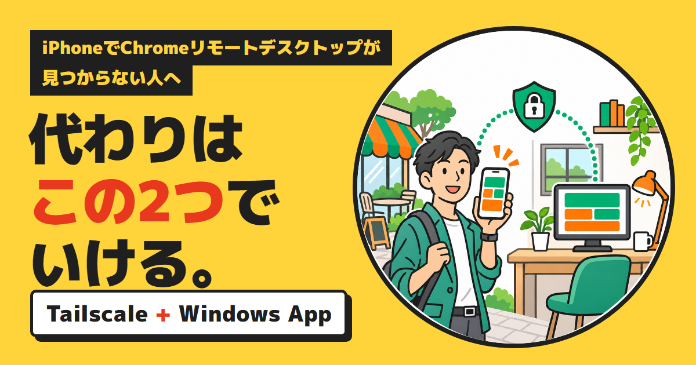
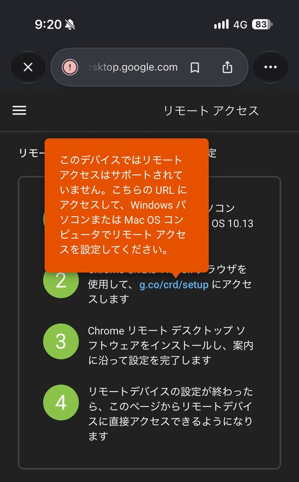
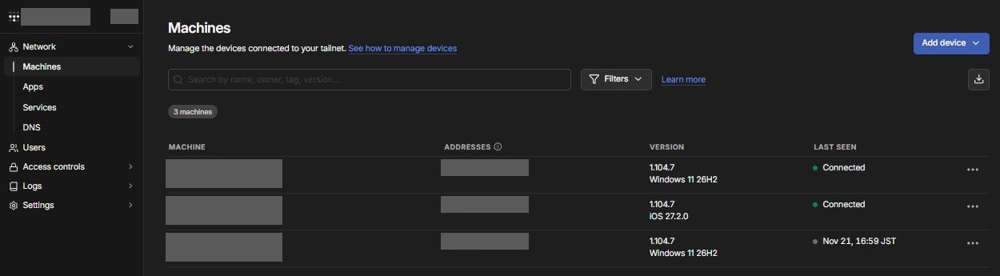
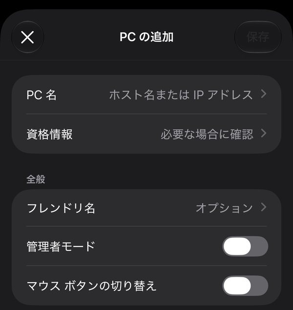
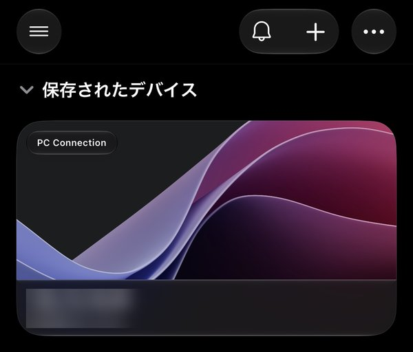
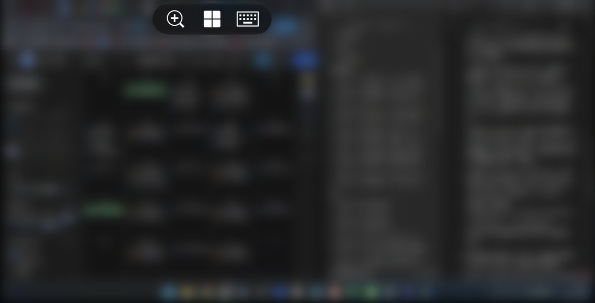

コラム ／ 業務ツール
スマホから自宅や事務所のPCを遠隔操作する方法。iPhoneでChromeリモートデスクトップが見つからないときの代わりに、TailscaleとWindows App

外出先のスマホから、自宅や事務所のPCを操作したい。そう思ってChrome リモート デスクトップを入れたものの、iPhoneではアプリが見つからず、ブラウザでも使えませんでした。代わりに使っているのが、VPNのTailscaleとMicrosoftのWindows Appの組み合わせです。この記事では、その手順と注意点を、Google・Microsoft・Tailscaleの公式情報(2026年11月22日に確認)とあわせてまとめます。
運用型広告の運用代行をしている運営者(SET UP)は、2026年11月に、外出先のスマホから自宅と事務所のWindows PCを操作できるようにしました。広告の管理画面は、ふだん使っているPCのブラウザにログインしてあり、手元のファイルもPCに入っています。外出先で「あのファイルを見たい」「PCの画面で確認したい」となったときに、スマホからPCをそのまま動かせると便利です。
この記事は、そのとき私が実際に試したことと、公式の情報を分けて書いています。
結論:Windows 11 Proなら、TailscaleとWindows Appで外出先からつなげる
- 操作される側のPCがWindowsのProエディションなら、Windowsのリモートデスクトップを使える。スマホにはMicrosoftのWindows App(無料)を入れる。Homeエディションは、操作される側になれない(Microsoftの案内)
- 外出先からつなぐ経路にはTailscaleを使う。PCとスマホに入れて同じアカウントでログインするだけで、ルーターのポート開放をしなくてよい
- Tailscaleは、個人で使うなら無料のPersonalプラン、仕事(商用)で使うなら有料のStandard(1ユーザー月8ドル)。公式サイトでPersonalは「非商用の利用向け」と書かれている
スマホからPCを遠隔操作する方法は3つ
スマホからPCをリモート操作する方法は、大きく分けて次の3つです。外出先からPCを遠隔操作したいときも、この中から選ぶことになります。
| 方法 | 操作される側のPC | スマホ側 | 料金 | 気をつけたいこと |
|---|---|---|---|---|
| Chrome リモート デスクトップ(Google) | Windows・Mac・Linux | Androidはアプリ(Google Play)。iPhoneは公式ヘルプではアプリ、またはブラウザで開く案内 | Googleアカウントで使える。アプリは無料でインストールできる | 運営者のiPhoneでは、App Storeの検索に公式アプリが出ず、ブラウザでも「サポートされていません」と表示された(3章) |
| Windows App+VPN(Tailscale) | WindowsのProなど(Homeは不可) | iPhone(iOS 16以降)・Android(10以降)のWindows App | Windows Appは無料。Tailscaleは個人なら無料のPersonal、商用はStandard(1ユーザー月8ドル) | PCとスマホの両方にTailscaleを入れる。ポート開放は不要 |
| 有料のリモートソフト | 製品ごとの動作環境による | 製品による(例のSplashtopは、iOS・Androidからの接続に対応) | 例:Splashtop Remote Access Proは年額18,000円(税別)/ユーザー。14日間の無料トライアルあり | 料金の払い方(年額か月額か)、対応OS、台数の上限を公式サイトで確認する |
操作される側のPCがWindows 11 Proなら、2つ目の方法が使えます。費用はWindows Appが無料で、Tailscaleは個人なら無料、仕事で使うならStandardの月8ドルです。一方で、PCがWindowsのHomeの場合は、2つ目の方法は使えません。Proにアップグレードするか、Chrome リモート デスクトップや有料のリモートソフトを検討することになります。
iPhoneでChromeリモートデスクトップが見つからなかった話
最初に試したのは、Chrome リモート デスクトップです。PC側の設定は、Googleの公式ヘルプの手順どおり、PCのChromeで remotedesktop.google.com/access を開いてソフトをインストールするだけで済みました。
つまずいたのはiPhone側です。2026年11月21日に、日本のApp Storeで「chrome リモートデスクトップ」と検索しても、Googleの公式アプリは出てきませんでした。表示されたのは、他社のリモートデスクトップアプリの広告と、Google Chrome(ブラウザ)です。
そこで、iPhoneのブラウザで remotedesktop.google.com/access を開くと、次のメッセージが出ました。

公式ヘルプには、今もiPhoneでの使い方が書かれている
一方で、Googleの公式ヘルプ「Chrome リモート デスクトップを使って他のパソコンにアクセスする」のiPhoneとiPadの手順には、2026年11月22日の時点でも「Chrome リモート デスクトップ アプリを開く」「まだインストールしていない場合は、ブラウザで remotedesktop.google.com/access にアクセス」と書かれています。
iOS版のアプリの提供が終わったと伝えるウェブ上の記事もありますが、Googleの公式の発表は確認できませんでした。そのため、この記事では「iPhoneでは使えない」とは書きません。運営者の環境では、アプリが見つからず、ブラウザでもつながらなかった、というのが事実です。同じ状況で困っている方は、次の章の方法を試してみてください。
外出先からPCにつなぐ手順(Tailscale+Windows App)
ここからは、運営者が実際に使っている組み合わせの手順です。PCはWindows 11 Pro、スマホはiPhoneです。
しくみ:Tailscaleで「同じネットワーク」にして、Windows Appでつなぐ
Windowsのリモート デスクトップは、もともと同じネットワークの中でつなぐ機能です。外出先からつなぐには、ルーターのポートを開けてインターネットにPCを公開する方法が紹介されることもありますが、PCが外から見える状態になります。
Tailscaleは、PCやスマホを自分専用のネットワーク(tailnet)につなぐVPNのサービスです。公式ドキュメントでは、ファイアウォールやNATをまたいでも、ポート開放や複雑なファイアウォールの設定なしで端末どうしがつながると説明されています。PCとスマホにTailscaleを入れておけば、外出先のスマホからも、PCに同じネットワークの中にいるようにつなげます。
手順1:PCとスマホにTailscaleを入れて、同じアカウントでログインする
- PCに、Tailscaleの公式サイトからWindows版をダウンロードしてインストールする
- スマホに、App Store(AndroidはGoogle Play)からTailscaleのアプリを入れる
- PCとスマホで、同じアカウント(GoogleやAppleなどのアカウント)でログインする
ログインすると、それぞれの端末に 100.x.y.z の形のIPアドレスが割り当てられます。Tailscaleの公式ドキュメントによると、このIPアドレスは、端末を登録し直さない限り変わりません。PCのIPアドレスは、Tailscaleの管理画面の「Machines」で確認できます。次の手順で使うので、メモしておきます。

手順2:PCでリモートデスクトップを有効にする
Microsoftのサポートページ「リモート デスクトップの使い方」の手順です。
- [スタート]→[設定]→[システム]→[バージョン情報]で、エディションが「Windows 11 Pro」になっているか確認する
- [設定]→[システム]→[リモート デスクトップ]を開き、リモート デスクトップをオンにして[確認]を選ぶ
Microsoftは、接続先のPCはProエディションのWindowsである必要があると案内しています。接続する側(スマホなど)の条件はありません。
手順3:スマホのWindows Appに、PCのTailscaleのIPを登録する
- App StoreからWindows Appを入れる(日本のApp Storeでは「Windows App Mobile」という名前で、以前の名前は「リモート デスクトップ」)。AndroidはGoogle PlayのWindows App
- Windows Appを開き、プラス(+)のアイコンから[PC]を選ぶ
- [PC 名]に、手順1でメモしたPCのTailscaleのIPアドレス(
100.で始まるもの)を入れて保存する

MicrosoftのWindows Appの手順では、[PC 名]にはPCの名前かIPアドレスを入れます。外出先から使うので、ここではTailscaleのIPアドレスを入れます。つなぐときは、スマホのTailscaleアプリで接続がオンになっていることを確認してください。
保存すると、Windows Appの「保存されたデバイス」に登録したPCが並びます。次からは、ここをタップするだけでつながります。

手順4:ユーザー アカウントを保存しておく
PCを登録するときに、PCにサインインするユーザー アカウントもあわせて登録できます。運営者の環境では、資格情報を保存しておけば、つなぐたびに入力しなくて済みました。保存しない場合は、つなぐたびに入力を求められます。
手順5:マウスとタッチの操作を切り替える
つないでいる間は、PCの画面の上にWindows Appのメニュー(拡大、スタート、キーボード)が出ます。

つないだ直後は、画面にマウスのカーソルが出て、指でカーソルを動かして操作する形でした。運営者の環境では、接続中に、画面を直接タップして操作する形へ切り替えられました。
Microsoftの説明では、iPhoneとiPadのWindows Appには次の2つのモードがあります。
- マウス ポインター:画面にマウスのカーソルが出る。指を動かすとカーソルが動き、タップでクリック、2本指のタップで右クリック
- 直接タッチ:画面をタップした場所が、そのままクリックになる。カーソルは出ない
細かいボタンを押すときはマウス ポインター、スクロールや大きなボタンの操作は直接タッチ、と使い分けると楽です。
外出先で使うときの注意
PCをスリープにしない
PCがスリープ中や電源が切れていると、外からはつながりません。運営者は、自宅のPCの電源の設定でスリープを「なし」にして出かけています。
ロック画面のままでよい
PCは、ロック画面のまま出かけても、Windows Appからつながりました。PCの前に誰かがいても画面を見られないように、出かける前にロックしておくと安心です。
モバイル回線でも使える。通信量には気をつける
運営者は、Wi-Fiのない場所でも、スマホのモバイル回線(4G/5G)でつないで使っています。画面を送り続けるので、長く使うとスマホのデータ通信量が増えます。料金プランの容量に余裕がないときは、Wi-Fiのある場所で使うほうが安心です。
仕事で使うならTailscaleは有料プラン
Tailscaleの料金ページでは、無料のPersonalプランは「自宅で使う個人向け」で、非商用の利用に限ると書かれています。仕事で使う場合は有料のStandardプラン(1ユーザー月8ドル)が対象なので、申し込む前に料金ページを確認してください。
スマホの画面ロックをかけておく
スマホのWindows AppにPCのユーザー アカウントを保存すると、スマホを開ける人なら誰でもPCを操作できる状態になります。スマホにはパスコードなどの画面ロックを必ずかけておきましょう。
広告運用の現場での使いどころ
運営者は広告運用の仕事で、外出先から次のような場面で使っています。
- 事務所のPCでログイン済みの管理画面を開く:ふだん使っているPCのブラウザで、広告の管理画面や計測ツールを開いて確認する。スマホのブラウザで新しくログインし直さなくてよい
- PCにしかないファイルを見る:入稿用のファイル、レポートの表計算ファイル、クライアントから受け取った資料など
- PCの画面で見た目を確かめる:LPや広告のプレビューを、PCの表示で確認したいとき
スマホのアプリで済むなら、リモートは要らない
逆に、予算の残りや配信状況の確認、広告の一時停止くらいなら、各媒体のスマホアプリや、スマホのブラウザで管理画面を開けば済みます。リモートでPCを動かすと、小さな画面で細かい操作をすることになり、かえって時間がかかります。
運営者の線引きは、「PCにしかないもの(ログイン済みの環境・ファイル・PCの表示)が要るときだけリモートでつなぐ」です。入札や予算を大きく変える作業は、誤操作を避けるためにPCの前に戻ってから行っています。
よくある質問
- Q. WindowsのHomeでも、Windows Appでつなげますか?
- 操作される側のPCがHomeの場合はつなげません。Microsoftは、接続先のPCはProエディションのWindowsである必要があると案内しています。接続する側(スマホやほかのPC)のエディションは問いません。
- Q. 全部無料で使えますか?
- Windows Appは無料です。Tailscaleは、個人で使うなら無料のPersonalプランで使えますが、Personalは非商用の利用向けです。仕事で使う場合は有料のStandardプラン(1ユーザー月8ドル)になります(2026年11月22日に公式サイトで確認)。
- Q. Androidのスマホでもできますか?
- Microsoftの案内では、Windows AppはAndroid 10以降に対応していて、Google Playから入手できます。TailscaleもAndroidのアプリがあります。運営者が試したのはiPhoneです。
- Q. ルーターの設定(ポート開放)は必要ですか?
- この記事の方法では必要ありません。Tailscaleの公式ドキュメントでは、ポート開放や複雑なファイアウォールの設定なしで端末どうしがつながると説明されています。
- Q. Chrome リモート デスクトップは、もうiPhoneで使えないのですか?
- 運営者のiPhoneでは、App Storeでアプリが見つからず、ブラウザでも「サポートされていません」と表示されました。ただし、Googleの公式ヘルプには、2026年11月22日の時点でもiPhoneでの使い方が書かれています。お使いの環境で確認してください。
まとめ
- スマホからPCを遠隔操作する方法は、Chrome リモート デスクトップ、Windows App+VPN(Tailscale)、有料のリモートソフトの3つ
- 運営者のiPhoneでは、Chrome リモート デスクトップのアプリが見つからず、ブラウザでも使えなかった。Googleの公式ヘルプには、今もiPhoneでの使い方が書かれている
- 操作される側がWindows 11 Proなら、TailscaleとWindows Appで、ポート開放なしに外出先からつなげる。Homeは不可
- Tailscaleは個人なら無料のPersonal、仕事(商用)なら有料のStandard(1ユーザー月8ドル)
- PCはスリープにしない。スマホには画面ロックをかける。PCにしかないものが要るときだけリモートを使う
参考にした公式ページ(2026年11月22日確認)
- Google Chrome ヘルプ「Chrome リモート デスクトップを使って他のパソコンにアクセスする」(iPhone と iPad)
- Google Play「Chrome リモート デスクトップ」
- Microsoft サポート「リモート デスクトップの使い方」
- Microsoft Learn「Windows アプリを使用してデバイスとアプリに接続する方法を始めよう」(リモート PC)
- Microsoft Learn「Windows アプリでキーボード、マウス、タッチ、ペンを使用する」
- App Store「Windows App Mobile」、App Store「Tailscale」
- Tailscale「Pricing」(英語)
- Tailscale Docs「What is Tailscale?」、「How Tailscale assigns IP addresses」(英語)
- Splashtop「Splashtop Remote Access」